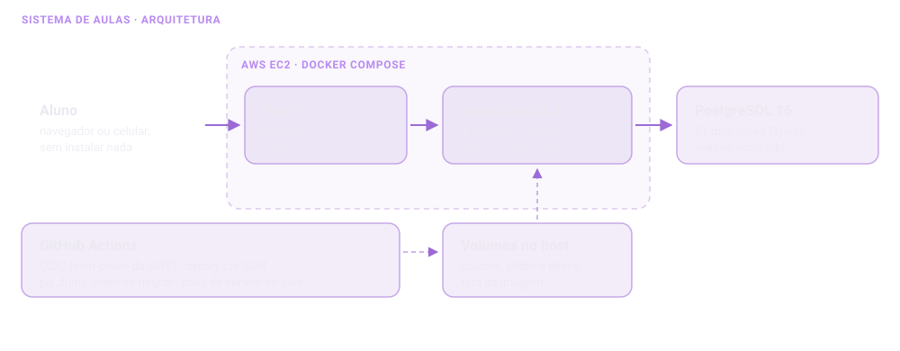

Sistema de Aulas: a plataforma que eu construí para dar aula
Uma turma de curso técnico, um laboratório onde não dá para instalar nada e 73 adolescentes que precisam escrever código na mesma hora. Este é o relato do sistema que resolve isso: as decisões, o que quebrou e como a operação ficou previsível.
- 73alunos em duas turmas
- 379testes automatizados
- 81migrações Flyway
- 12 mindo incidente ao retorno
A restrição veio antes do projeto
A disciplina é de 80 horas, presencial, em duas turmas. O laboratório tem máquinas lentas, sem garantia de permissão de administrador e sem garantia de internet. Instalar um editor em cada máquina, toda aula, não é viável. E, em casa, boa parte da turma só tem celular.
Isso define a arquitetura antes de qualquer preferência técnica: tem que rodar no navegador, sem instalação, e tem que abrir no celular. O material das aulas seguiu a mesma regra e é todo autocontido, sem depender de internet: slides, folhas e quizzes abrem com duplo clique em qualquer máquina.

As decisões que valem explicar
O painel-modelo, que é o coração do sistema
O código da aula fica ao lado do editor e cada linha digitada corretamente some do painel. Isso parece um detalhe de interface, mas é o que dá ao professor uma resposta que nenhuma lista de presença dá: onde cada aluno parou, naquele instante, sem precisar olhar por cima do ombro de trinta pessoas.
Sem Spring Security, de propósito
A autenticação é um interceptor de sessão, e o hash de senha vem do
spring-security-crypto sozinho. O motivo é pedagógico: no
bloco de Java no servidor, o código deste sistema vira o
material da aula. Um filtro de 40 linhas que a turma consegue
ler em voz alta vale mais, ali, do que uma configuração que eu teria de
pedir para eles ignorarem.
O mínimo de dado pessoal, porque são menores de idade
O sistema guarda nome, turma e senha. Não guarda e-mail, documento, telefone nem foto. Não há link público para a área do aluno. Menos dado guardado é menos dado para vazar, e essa é uma decisão de produto antes de ser técnica.
Os quizzes moram fora da imagem
As perguntas são arquivos JSON num volume, e não dentro da imagem Docker. Publicar um quiz novo é copiar um arquivo e clicar em "recarregar" no painel, sem build e sem reinício, no meio de uma aula.
Prazo que abre e fecha sozinho
Cada turma tem o seu calendário, e as turmas andam desencontradas. Até dois dias depois da aula a entrega conta no prazo; até sete dias ainda entra, marcada como atrasada; depois disso fecha. O professor tem uma chave manual para quando a aula muda de dia.
Operação: o que impede uma aula de virar um incidente
- 379 testes automatizados, rodando no CI a cada push.
pg_dumpantes de toda migração, automático no deploy.- Trava de horário: o deploy não reinicia a aplicação durante o horário de aula das turmas.
- GitHub Actions com OIDC e SSM: nenhuma chave da AWS guardada no repositório, e a porta 22 pode ficar fechada.
O deploy que derrubou a produção — e voltou em 12 minutos
Num sábado, 20 migrações subiram de uma vez. Três coisas aconteceram em sequência, e cada uma ensinou algo diferente.
1. O CI reprovou, e o defeito era do próprio CI
Dois testes que conferem o código que a turma digita liam uma pasta vizinha do repositório. No CI, essa pasta só era clonada depois dos testes — ou seja, esses dois testes nunca tinham rodado de verdade.
E foi por pouco que não foi pior: se eles tivessem sido escritos com um "pule se a pasta não existir", teriam ficado verdes sem conferir nada, por semanas. Hoje o checkout acontece antes, e se a pasta faltar o CI avisa alto e pula: o sistema sobe, e fica registrado no log que o guarda não rodou.
2. Uma migração derrubou a produção
Uma migração com trava de segurança abortou, a aplicação não subiu e o Nginx passou a responder 502. A trava estava certa em espírito e errada na pergunta: ela perguntava "existe alguma conta ignorada com trabalho entregue?", quando o que precisava perguntar era "esta migração tirou alguém que tinha trabalho entregue?".
Localmente ela nunca acusou, e não podia: o defeito só existia contra o dado de produção. O conserto foi reproduzido antes de subir, num banco novo migrado até a versão anterior, com uma conta no mesmo estado do caso real.
A lição que ficou: migração que espera uma decisão precisa ser ensaiada contra uma cópia do dado real antes de subir junto com outras dezenove.
3. No ar, e o que não chegou junto
O sistema voltou, mas dois itens ficaram para trás: um token de acesso respondia 404 e o material novo não desceu junto. Isso não aparecia em nenhum erro de aplicação — só numa conferência tela a tela, olhando o que o aluno veria.
O que eu levo deste projeto
O padrão dos três defeitos mais sérios do semestre é o mesmo: nenhum deles tinha sintoma. Não apareceram como erro, não vieram de reclamação de aluno; apareceram em conferência deliberada. Por isso a régua aqui é conferir o estado real em produção, e não confiar em "subiu sem erro".
O segundo aprendizado é sobre suposição escrita em comentário. Um comentário que afirmava algo sobre o resto do sistema estava desatualizado, e foi exatamente ele que gerou um bug silencioso de paginação. Comentário que afirma o que outra parte do código faz envelhece sem avisar.